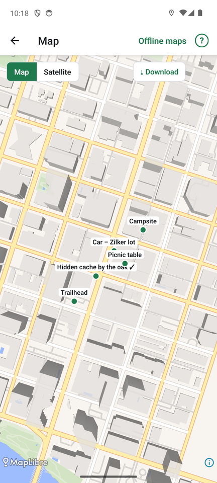

Maps and offline use

The map
Tap Map at the top of the places list. All your places appear on a map, and the blue dot is you.
- Map shows free street maps (OpenStreetMap data).
- Satellite shows aerial pictures from the U.S. Geological Survey. Satellite covers the United States only; elsewhere, a note says so and you can use the street map.
- Tap a place for its distance and Find it, which opens the compass.
- From the places list, long-press a place and choose Show on map to open the map on that place.
- The ⓘ button shows where the map data comes from.
Your choice of layer is remembered.
Save a map for use with no signal
Many good spots have no phone signal. Save the map first, at home:
- Open the map and move to the area you want. Zoom in so the area fits the screen.
- Pick the layer (Map or Satellite) and tap Download.
- Progress shows on the map. Download once for Map and once for Satellite if you want both.
If the area is too large, FindCache asks you to zoom in first. Downloads include detail from zoom 10 to 14 for Map and 10 to 16 for Satellite.
Saved areas work in airplane mode and anywhere without a connection, on the map screen and behind the compass.
Offline maps
Tap Offline maps on the map screen to see everything you saved: the layer, size, state and date, and the total size. Delete removes an area you no longer need, after asking.
A map behind the compass
In Settings, Behind the search area can be Plain (just the rings), Map or Satellite. Inside the search area, a round map then sits under the compass rings, turning with you at the same scale, so the search circle lands on the real ground. Saved offline maps are used when there is no connection.
FindCache works without maps. The compass, distance and uncertainty need only GPS.